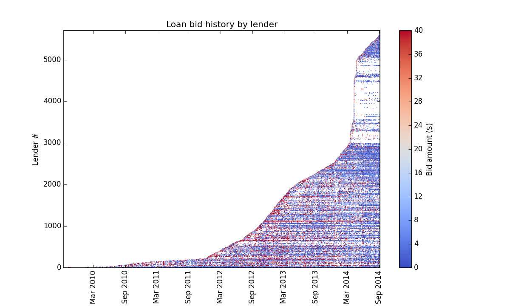

How can lender retention be increased for a site with fairly stable engagement patterns?
Maintaining a microfinance organization is not a simple task. I had the opportunity to work with the peer-to-peer microfinance organization, Zidisha, on a short project as part of the Insight Data Science Fellowship, and learned a lot about the subtle balancing act required to balance lending and borrowing activity while growing the organization.
Zidisha was really interested to better understand what factors influence retention of their lenders.
Zidisha's operating assumption was that the financial performance of loans that a lender helped fund was the most important factor in whether or not lenders remain engaged with the site. They recognize that the social experience likely also contributes, but they'd never had a data-driven answer to how much impact social factors influence lending, such as interaction between borrowers and lenders through comments on application pages.
I'll discuss below my findings on lender retention. But investigating lender behavior led a second question, which I expect may have a bigger impact on the organization. Lenders are making more bids through the site than ever, so why are so many loan applications failing to be funded in recent months? How can Zidisha respond to this issue? Essentially, how can Zidisha move towards active management of loan inventory? Check out the Slides tab above for more on this issue and the solution I developed with Zidisha.
For background, Zidisha connects borrowers in developing countries with individual lenders around the world. Loan applications are posted on the Zidisha sites, and lenders bid enough to fill the requested total, then the loan is disbursed to the borrower. Typically many lenders contribute to an individual loan application, with lenders typically contributing amounts in the range of $5-30 each.
At Zidisha, keeping a lender engaged and lending through the site could mean dozens of borrowers in developing countries have access to loans with lower interest rates, allowing them to maintain or grow new businesses. Before trying to quantify how specific factors are correlated with retention, I wanted to first understand how lenders are interacting with Zidisha. As a starting point, I made a visualization showing bidding activity at Zidisha. In the figure below, each row corresponds to an individual lender, in order of signup, and each dot represents an individual bid made by that lender, over the past 5 years.
One feature that jumps out in this image is the growth rate of lenders: after fairly steady increase from 2012-2014, there is a massive surge of lenders making their first bids in March to April of 2014, with over a thousand lenders joining on a single day. Zidisha's founder explained to me that that surge corresponded to a viral Facebook post. From the big guy upstairs. Turns out God on Facebook has a pretty decent following, as discussed in this Mashable piece.
It’s clear, however, that those who joined during this period (here to for referred to as ’the Flock’) were substantially less likely to continue to make loans regularly than lenders who joined the organization before or after. While Zidisha does not track the source of lenders in their database, it’s common for users finding sites organically to have higher retention than those finding sites through campaigns.
It’s clear from this figure, however, that those who joined during this period (here to for referred to as ’the Flock’) were substantially less likely to continue to make loans regularly than lenders who joined the organization before or after. While Zidisha does not track the source of lenders in their database, it’s common for users finding sites organically to have higher retention than those finding sites through campaigns.
A few other trends emerge in this visualization:
- Generally, lender retention is pretty stable. For lenders who do not stay engaged, the timescale of initial engagement appears to be on the scale of several weeks, rather than months.
- Lender engagement, in terms of bids per month, appears to have increased since September 2013, with the exception of ‘the Flock’.
- Zidisha encourages lenders to distribute their funds amongst many borrowers, and it is apparent in this figure that overall, lenders are shifting over time towards smaller bid amounts, and it appears lenders joining before March 2013 are more likely to consistently make bids of $30 or more.
- Further, the density of bids greater than $30 seems to be highest in the month or two after a lender’s first bid.
With this type of visualization of lending behavior, can quickly give a sense of cohort behavior and what types of trends may be worth investigating further, before diving into more detailed, quantitative analysis.
Rather than looking at the individual bid level, lending activity can be aggregated to look at retention rates by cohort.
What is striking about this figure is that after making a bid in the first month, lender engagement tends to be very consistent in the months that follow. This is unusual compared with typical retention for websites or aps, which generally show gradual decrease in engagement over time. Generally, engagement is much more consistent within a cohort over time, than with the number of months since make a first bid. This suggests that engaged lenders tend to remain engaged, and Zidisha may want to focus on deeper engagement of lenders during their first month.
You may notice sightly lower use in the first few months after making an initial bid: generally engagement during this period is lower by 4-5 percentage points, then rising to a steady level in the following months. This initial dip in engagement is likely associated with lenders making a first bid and then lending again once that initial loan has been repaid. This indicates that notification of repayment of a lender’s initial loan may be effective at reengaging a significant number of lenders.
In digesting this figure, it’s important to note that cohorts joining before 2012 typically have 10 or fewer members, the majority of whom are friends and family of the organization. In more recent cohorts, 20-30% of lenders are consistently engaged.
Check back for more detail on what factors drive lender retention! You can also check out more information at the Slides tab above.
Erin Hult is currently a Fellow in the Insight Data Science Program. Prior to Insight, Erin studied energy management systems and indoor air quality as a Postdoctoral Fellow at Lawrence Berkeley National Laboratory. There, Erin's recent projects focused on how we can best use energy consumption data to drive energy efficiency in commercial buildings. Erin received a BS in Mechanical Engineering from MIT and a PhD in Environmental Fluid Mechanics from Stanford University, where she studied stratified mixing processes using quatitative imaging techniques in lab-scale experiments.